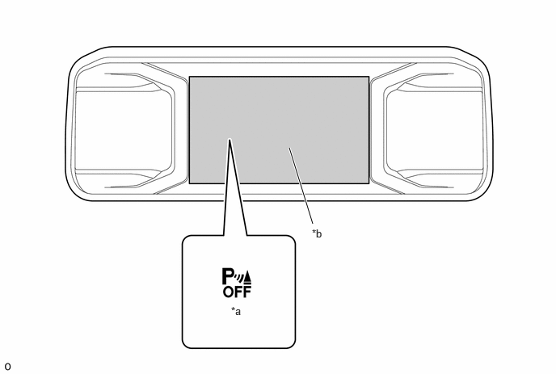
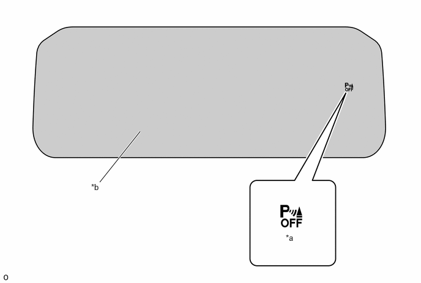
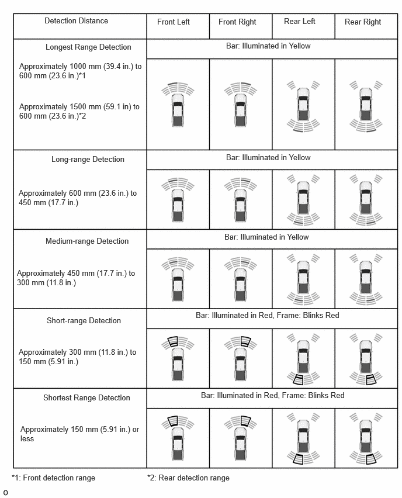
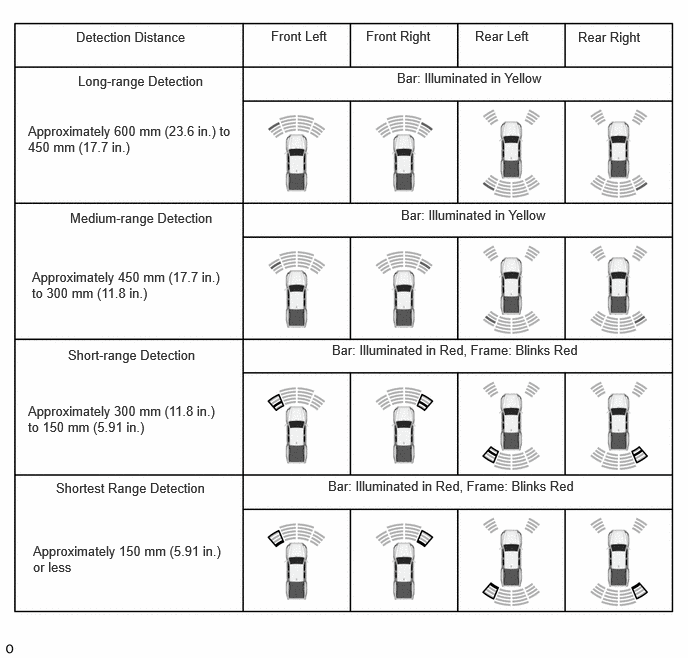

- Intuitive parking assist system OFF indicator: illuminates
- Meter buzzer: Sounds
| Last Modified: 10-07-2025 | 6.11:8.1.0 | Doc ID: NM100000002GLCZ |
| Model Year Start: 2024 | Model: Tacoma | Prod Date Range: [12/2023 - ] |
| Title: PARK ASSIST / MONITORING: INTUITIVE PARKING ASSIST SYSTEM: COMBINATION METER; 2024 - 2026 MY Tacoma Tacoma HV [12/2023 - ] | ||
COMBINATION METER
OPERATION
(a) Indicator Display
(1) When the intuitive parking assist system is off, the intuitive parking assist system OFF indicator is turned on.
(2) When a malfunction occurs, the intuitive parking assist system OFF indicator illuminates, the meter buzzer sounds, and warnings are displayed on the multi-information display, in order to inform the driver of a system malfunction.
7-inch Monitor Type
|
*a |
Intuitive Parking Assist System OFF Indicator |
*b |
Multi-information Display |
12.3-inch Monitor Type
|
*a |
Intuitive Parking Assist System OFF Indicator |
*b |
Multi-information Display |
(b) Intuitive Parking Assist Detection Display
(1) If the front center sensor and rear center sensor* detect a static object, the detection location and the approximate distance to the static object are displayed on the multi-information display at 5 levels (longest range, long-range, medium-range, short-range and shortest range).
HINT:
*: When driving backward with a trailer connected, the rear center sensor and rear corner sensor turn off and only the front corner sensor operates. Therefore, the intuitive parking assist detection display for the rear sensor area when driving backward is not displayed.
Center Sensors (The illustrations are examples only. Actual screens may vary.)
(2) If the front corner sensor and rear corner sensor* detect a static object, the detection location and the approximate distance to the static object are displayed on the multi-information display at 4 levels (long-range, medium-range, short-range and shortest range).
HINT:
*: When driving backward with a trailer connected, the rear center sensor and rear corner sensor turn off and only the front corner sensor operates. Therefore, the intuitive parking assist detection display for the rear sensor area when driving backward is not displayed.
Corner Sensors (The illustrations are examples only. Actual screens may vary.)
(c) Warning Display
(1) When a malfunction occurs in the intuitive parking assist system or the system cannot be used, a warning is displayed on the multi-information display, an intuitive parking assist system OFF indicator illuminates and the meter buzzer sounds to inform the driver that the system is unavailable.
|
Warning Item |
Multi-information Display |
Indicator/Meter Buzzer Condition |
|---|---|---|
|
Intuitive parking assist system malfunction |
Parking Assist Malfunction Visit Your Dealer |
|
|
Ultrasonic sensor dirty, frozen or open circuit |
Clean Parking Assist Sensor |
|
|
Intuitive parking assist system communication malfunction |
Parking Assist Unavailable |
|
HINT:
If "Parking Assist Unavailable" is displayed on the multi-information display in the combination meter assembly, this may be due to the following.
- Water may be continuously running over the surface of the sensor. This will return to normal once the system is determined to be operating normally.
- After removing and installing the battery, the system may not have been initialized. Initialize the system.
(d) Automatic Off Display of the Rear Intuitive Parking Assist
(1) When a trailer is connected, intuitive parking assist OFF indicator illuminates and meter buzzer sounds to notify the driver that rear intuitive parking assist is turned off.